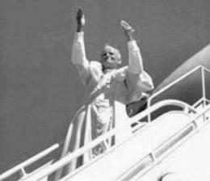
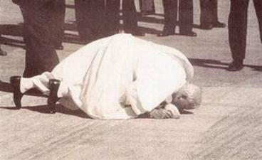
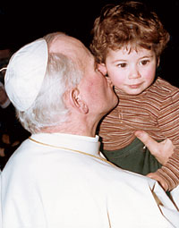
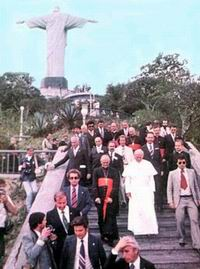
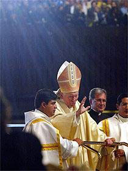

Padroeira de Portugal, em Vila Viçosa. Em 15 de Maio de 1982 visitou o Santuário
de NOSSA SENHORA DO SAMEIRO, em Braga.
Padroeira de Portugal, em Vila Viçosa. Em 15 de Maio de 1982 visitou o Santuário
de NOSSA SENHORA DO SAMEIRO, em Braga.
"PEDRO, O VIAJANTE FIEL"
Em 1979, o novo Papa encontrou encima
de sua mesa uma Carta Convite para ir ao 
Porém, ainda teria que enfrentar a questão da teologia da libertação. Essa teologia embora exprimindo alguns sentimentos do catolicismo latino-americano, estava contaminada por correntes radicais que introduziram desvios doutrinais e pastorais, identificando a missão evangelizadora como se fosse uma ação revolucionária!
Foi a primeira viagem do Papa fora da Itália, e foi muito bom pela extraordinária reação dos católicos mexicanos, que puderam sair de um longo e penoso estado de minoria. Também foi bom para o Papa porque conheceu de perto a realidade da América Latina, aprendeu a “linguagem da libertação” e suas motivações mais autênticas. Tanto, que a partir daquela experiência surgiram as grandes linhas “sociais” de seu pontificado.
A visita ao México começou com uma festa incrível desde que o Papa chegou. Uma multidão imensa pelas ruas. Pela primeira vez se ouviu aquela saudação ritmada, que se tornaria famosa no mundo todo: “A bênção João de DEUS, o teu povo te abraça”… Karol surpreso e feliz, se deixou levar por aquele abraço que quase o sufocava. Contagiado pela espontaneidade do povo, começou a improvisar, a conversar com as pessoas, num idioma que não era o seu. Esta mesma música com versão em português, foi divulgada e acolhida no Brasil com entusiasmo e carinho. Por ocasião das três visitas que Sua Santidade esteve no Brasil, ficou como um verdadeiro hino de saudação, cantado pelo povo milhares de vezes, num sinal de amizade e de fervorosa acolhida ao Papa João Paulo II.

Aquele posicionamento do Papa em seus discursos exacerbou a ira dos contrários que logo o chamaram de “Papa terceiro-mundista” , “integralista de Puebla”, “conservador”, “tradicionalista” e outros adjetivos.
Entretanto, nenhum daqueles comentários atingiram a sua pessoa, porque jamais ele se deixou condicionar por críticas tão preconceituosas e instrumentais. Inspirava-se na oração durante o permanente encontro que mantinha com o SENHOR e seguia o Evangelho, tendo desse modo, a plena convicção de qual o melhor caminho que devia escolher.
Ele foi o Papa
que mais viajou e visitou um admirável número de países, tendo sido 
Depois do México, foi a Polônia e depois aconteceu uma série de novos convites, a Irlanda, os Estados Unidos e a ONU, a Turquia, Republica Dominicana, Bahamas, Brasil, França, África (diversos países), Alemanha, Paquistão, Filipinas, Japão, Argentina, Portugal, Uruguai, Bolívia, Peru, Paraguai, Áustria, Inglaterra, Suíça, Canadá e muitos outros, num total de 104 visitas durante o seu pontificado de 26 anos.
O catolicismo ganhava em universalidade, em impulso missionário e consolidavam-se as ligações entre a Santa Sé e as Igrejas. Muitas vezes, após a peregrinação do Santo Padre, acontecia um aumento de vocações sacerdotais, principalmente no Leste Europeu, na África e na Coréia do Sul (nesta, onde ainda predomina o budismo e o confucionismo).
Também esteve na ilha de Gorée no Senegal, onde aconteceu o “Holocausto desconhecido” de milhões de negros africanos, que partiram acorrentados para as Américas. À noite, depois de visitar a ilha dos escravos, continuou a falar sobre o tema. Estava horrorizado e angustiado, principalmente por causa das crianças, vítimas de um comércio imundo. E não conseguia se acalmar por saber que quem cometera aquele crime horrendo foram homens que se declaravam cristãos!
Na República do Chade, o cortejo de carros estava percorrendo uma estrada às margens do Sahel (é uma região situada entre o deserto do Sahara e as terras mais férteis ao sul) quando se deparou com um pequeno vilarejo, que apenas possuía algumas cabanas miseráveis. O Santo Padre pediu para parar, entrou num daqueles casebres, falou com as pessoas do local e constatou aquela abominável miséria. Queria ver. Queria entender. E talvez, exatamente pelo que viu e entendeu, deu tanta ênfase ao discurso no qual apelou fortemente para o dever da comunidade mundial de não esquecer a África. Era desumano não socorrer aqueles povos que necessitavam de urgente ajuda.
“No Brasil, levaram o Papa a uma favela cuja pobreza era assustadora”, escreveu o Cardeal Stanislaw, Secretário Particular dele. Era a Favela do Vidigal. “Olhava em volta, quase desesperado, sem saber o que poderia fazer, ali, naquele momento, para diminuir o sofrimento do povo. E então, de repente, tirou o seu anel papal de ouro e doou àquela gente”.

A segunda visita foi entre 12 e 21 de Outubro de 1991. O Papa não costumava beijar o solo de um país que ele já tinha visitado, mas no Brasil ele quebrou a tradição e beijou o chão brasileiro nas três viagens. Visitou sete cidades e fez 31 discursos e homilias.
A terceira viagem foi entre 2 e 6 de Outubro de 1977. O Papa sempre demonstrou um carinho especial pelo Brasil, não só pelo fato de ser o país com mais católicos no mundo, mas também pela calorosa e amiga receptividade que o povo lhe proporcionava. Foram visitas que trouxeram muitos benefícios ao clero, aos católicos e ao povo em geral.
Em visita a cidade do Rio de Janeiro ele falou: "Se Deus é brasileiro, então o Papa é carioca”.
Em Portugal, João Paulo II esteve por cinco vezes. A primeira visita (12 a 15 de Maio de 1982), um ano após o atentado de que foi vítima em 13 de Maio de 1981. Nesta visita ele trouxe a bala do atentado sofrido no ano anterior em plena Praça de São Pedro, no Vaticano, e a depositou no altar de NOSSA SENHORA DE FÁTIMA. Atualmente a bala está incrustada na coroa de ouro da imagem de NOSSA SENHORA DE FÁTIMA, que está na Capelinha das Aparições.
Em 14 de Maio
de 1982 visitou o Santuário de NOSSA SENHORA DA CONCEIÇÃO,
Padroeira de Portugal, em Vila Viçosa. Em 15 de Maio de 1982 visitou o Santuário
de NOSSA SENHORA DO SAMEIRO, em Braga.
Em 2 de Março de 1983, fez escala em Lisboa na viagem a América Central.
De 5 a 13 de Maio de 1991 esteve nos Açores, na Ilha Madeira, em Lisboa, e novamente em Fátima.
E finalmente fez outra visita a Portugal de 12 a 13 de Maio de 2000, quando foi a Fátima e beatificou os dois pequenos pastores videntes de Fátima, Jacinta e Francisco Marto.
Na Colômbia, em Popayan, houve o encontro com os índios. Descreve o Secretário Particular do Santo Padre: “O cacique começou a ler a sua mensagem por inteiro, não aquela censurada antes por alguém, e disse palavras fortes contra os patrões que mandaram assassinar os indígenas, inclusive mulheres e crianças. Um padre subiu ao palco e tirou o microfone do índio, mas João Paulo II passou-lhe o seu microfone, dando-lhe de novo a palavra”. Sem dúvida, naquele momento, um gesto daquela natureza valeu mais do que cem discursos.
A viagem ao Chile também foi difícil. Haviam pessoas que queriam manipular o Santo Padre, como também haviam opositores ferrenhos a visita do Papa. Escreveu o Secretário Particular: “No grande parque de Santiago, durante a beatificação de Teresa de los Andes, os manifestantes rebeldes provocaram a policia e esta respondeu com gás lacrimogêneo. A fumaça chegou até o altar. O Papa não se amedrontou, mas durante a Santa Missa temeu pelos fiéis, temeu que pudesse acontecer algum incidente grave”. Felizmente nada grave aconteceu com o povo.
Os jornais de Santiago noticiaram em amplo espaço sobre este acontecimento condenável, mas quase nada informaram sobre o notável e entusiasmado encontro de João Paulo II com os jovens, no estádio nacional de futebol. Descreve o Secretário Particular: “O Papa gritava: El amor es más fuerte. A juventude chilena presente ao estádio respondia repleta de alegria e a plenos pulmões: Si, Si, Santidad. E quando ele perguntou aos jovens se queriam renunciar aos ídolos do mundo, responderam com um altíssimo grito: Siii, que talvez tenha sido o início da nova história do Chile”.
Na década de
1980, os líderes da União Soviética fizeram planos para assassinar o 
O Papa, criticou fortemente a aproximação da Igreja com o marxismo nos países em desenvolvimento, e em especial criticou a Teologia da Libertação, considerando-a um perigoso e lascivo caminho que corrói e desagrega a unidade cristã.
Em visita à Nicarágua, João Paulo II chegou a discutir com fiéis que insistiam em acolher a Teologia da Libertação, e depois de condenar a participação de padres católicos no governo comunista sandinista, foi vaiado por aqueles que não aceitavam a sua verdade, ou seja, a Verdade Cristã.
Todavia, pela vontade de DEUS, na Europa aconteceu a queda do Muro de Berlim, evidenciando de modo heróico o desejo de liberdade do ser humano. Foi a preciosa oportunidade para o Santo Padre e para o mundo, de ultrapassar as portas de todos os países do bloco da antiga União Soviética e proclamar o direito alienável das pessoas de viverem com dignidade, cultivando a liberdade de pensamento, de expressões e de movimento, e exercitando com absoluta autonomia a sua crença e a maneira de revelar o seu amor a DEUS. Primeiro ele foi a Checoslováquia, depois a Albânia, Bulgária, Ucrânia, Armênia, Geórgia, Kazaquistão, Azerbaijão e outras. As visitas pontifícias muitas vezes eram solicitadas pelos próprios chefes de Estado, como no caso da Grécia e da Mongólia. Na Mongólia, os governantes já tinham concedido a liberdade de culto para muçulmanos e budistas; mas evidentemente julgava-se que a presença de uma Igreja como a Católica contribuiria para o desenvolvimento moral e social da nação.
Todavia, para alcançar a Mongólia o Santo Padre desejaria passar por Moscou. Seria sem dúvida, uma excelente oportunidade, na qual João Paulo II queria, ele mesmo, entregar solenemente a autoridade religiosa russa o ícone da MÃE DE DEUS, chamado de Kazan, encontraria com o Patriarca Ortodoxo de Moscou, Alessio II, cuja visita já tinha sido desmarcada duas vezes anteriormente, e depois, prosseguiria viagem para a Mongólia. Mas não foi possível.
Apesar de algumas negativas, escreveu o Secretário Particular do Pontífice: “As viagens do Papa favoreceram a aproximação da Igreja de Roma com as outras Igrejas Cristãs. E isso, graças a humildade sempre demonstrada claramente por João Paulo II, reconhecendo os erros dos católicos nos séculos passados e sua fervorosa vontade de estabelecer a paz no mundo e o construtivo entendimento entre os povos e as religiões”.
Desse modo, as viagens do Santo Padre foram eventos espirituais acima de tudo, que criaram as premissas para uma necessária renovação religiosa. Foram também preciosas oportunidades para ele empreender uma forte ação em defesa dos direitos humanos, da justiça social e da paz.